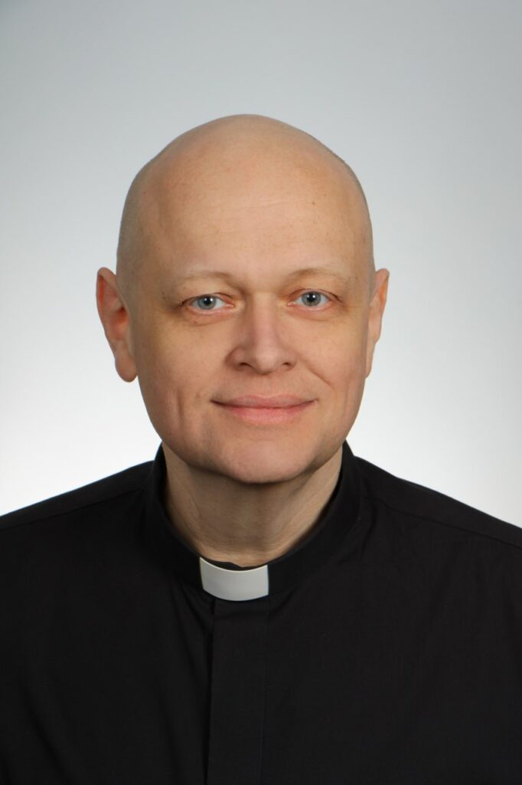
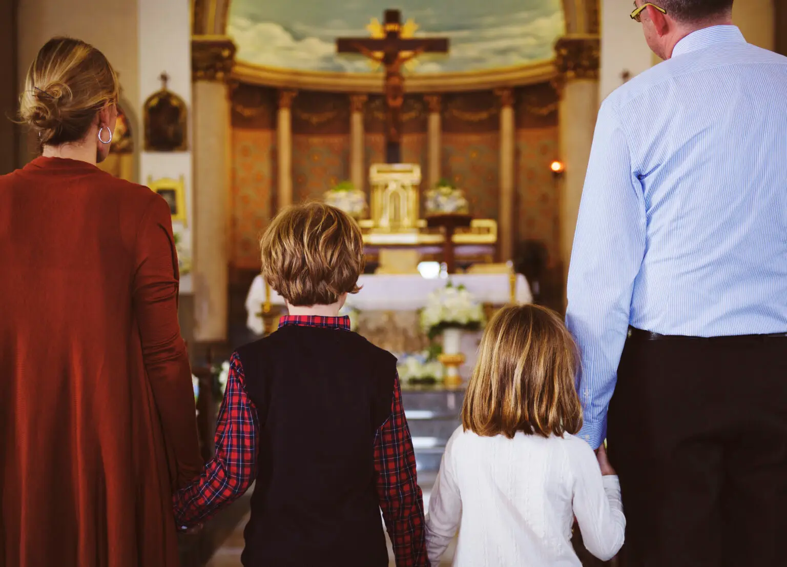
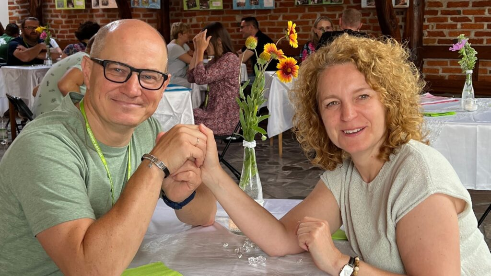
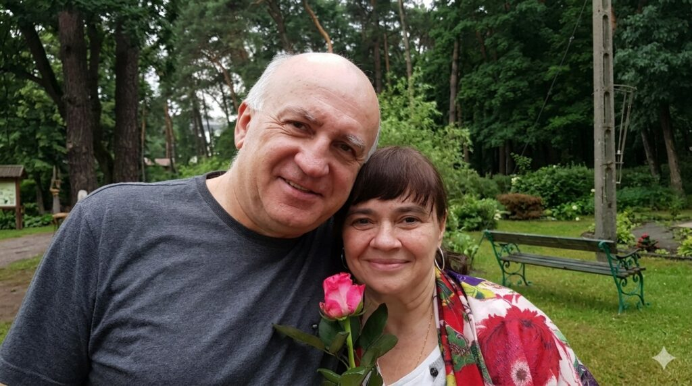
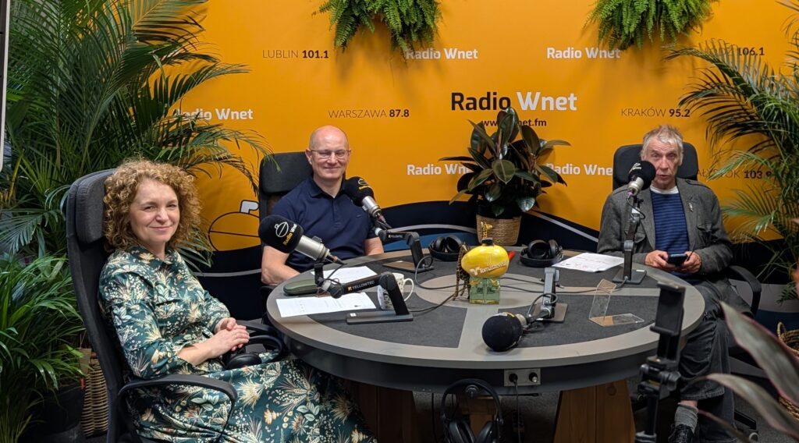
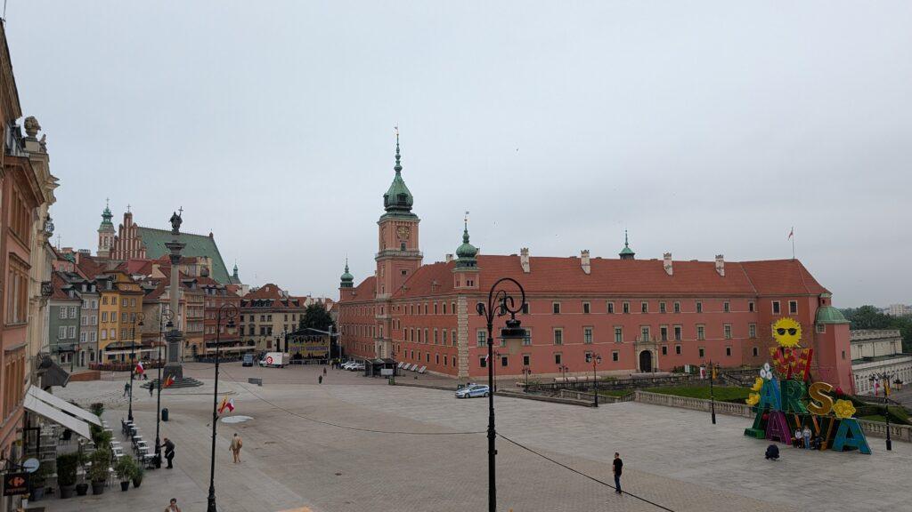
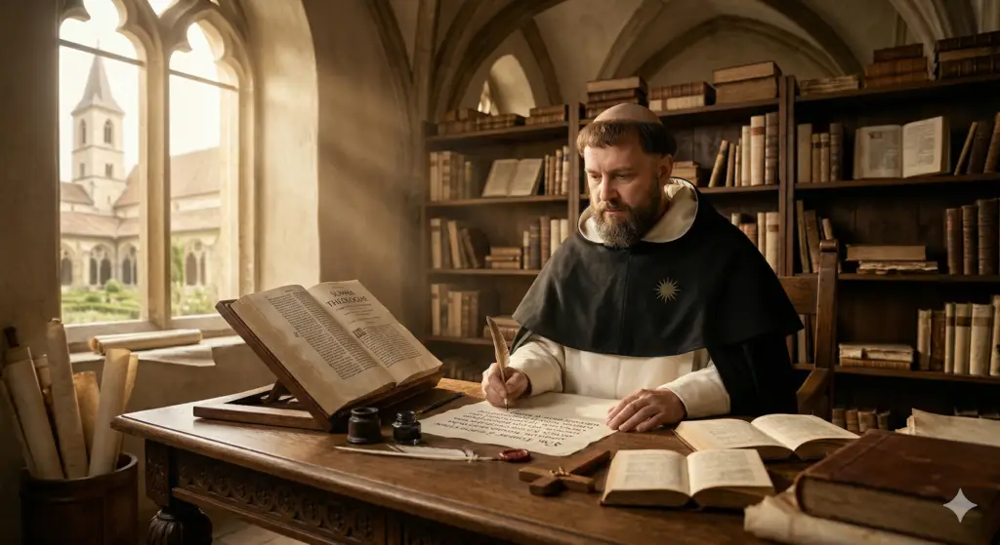

Opiekun duchowy
ks. Paweł Stępień
„Wspiera i towarzyszy."
Doktor teologii, psychoterapeuta, były wieloletni wykładowca Pisma Świętego i Ojciec Duchowny seminarium.
Katolicka fundacja · Polska · 2025
Wspieramy rodziny katolickie w przekazywaniu wiary kolejnym pokoleniom — w oparciu o badania, doświadczenie i wspólnotę Kościoła.
ks. Paweł Stępień · Opiekun duchowy
Doktor teologii · towarzyszy fundacji od początku

Co robimy
Każde pokolenie zadaje sobie to samo pytanie: jak przekazać dzieciom to, w co naprawdę wierzymy? Widzimy wiele rodzin, które dają z siebie wszystko — a mimo to patrzą, jak dorosłe dzieci odchodzą od wiary. Zamiast rozpamiętywać przyczyny, uczymy się od tych, którym się udało.
Rozmawiamy z rodzinami, które przekazały wiarę kolejnemu pokoleniu — i słuchamy, co naprawdę się sprawdziło.
Opisujemy to, co działa, w oparciu o badania pod nadzorem naukowym — nie o domysły.
Zamieniamy wnioski w praktyczne narzędzia dla rodzin, katechetów i wspólnot parafialnych.
Bez moralizowania. Konkretnie.
Nasze badania
Prowadzimy badania jakościowe rodzin, którym udało się skutecznie przekazać wiarę dorosłym już dzieciom. Spotykamy się z nimi, słuchamy i opisujemy to, co działa.
Pod naukowym nadzorem prof. Dariusza Wadowskiego z Katolickiego Uniwersytetu Lubelskiego.Dowiedz się więcej
O nas

Opiekun duchowy
„Wspiera i towarzyszy."
Doktor teologii, psychoterapeuta, były wieloletni wykładowca Pisma Świętego i Ojciec Duchowny seminarium.


Aktualności

Co sprawia, że młodzież pozostaje we wspólnocie wiernych? O tym rozmawialiśmy w Radio Wnet.

W uroczystość Bożego Ciała 2026 opowiedzieliśmy o projekcie fundacji.

De magistro i Familiaris consortio o pedagogice domowej — w świetle nauki św. Tomasza.